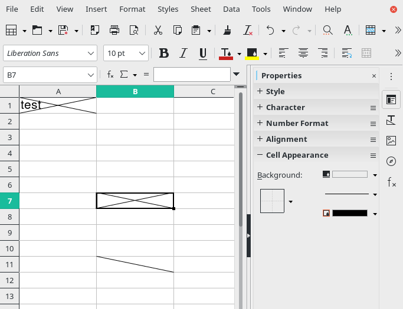
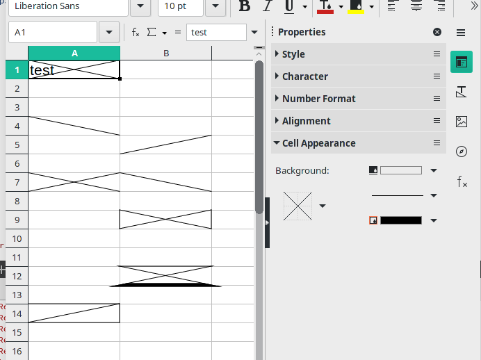

Week #10 - GSoC Weekly Report - 100 Paper Cuts
GSoC progress for week #10.
Calc: Border preview doesn’t show the diagonal borders in Cell Appearance section
- Bug: tdf#143890 - Border preview doesn’t show the diagonal borders
- Commit: https://gerrit.libreoffice.org/c/core/+/120519
In (Sidebar Tab) Properties > Cell Appearance, Calc always shows preview of the selected cell borders.
For example; if LEFT border set in a cell, the preview shows LEFT border (as expected). But this feature doesn’t show the preview of diagonal borders. When we set (e.g.)diagonal RIGHT border in a cell, the preview doesn’t update itself to show diagonal RIGHT border.
Steps to Reproduce:
- open Calc and select a cell
- (in Sidebar) go to “Properties > Cell Appearance”
- select Diagonal Up (and/or Down) border
Actual Results: Preview doesn’t show diagonal borders
Expected Results: Diagonal borders should be shown in the preview (as other borders).
Code pointers:
-
sc/source/ui/sidebar/CellAppearancePropertyPanel.cxx: https://opengrok.libreoffice.org/xref/core/sc/source/ui/sidebar/CellAppearancePropertyPanel.cxx?r=1653bb9b#467
-
sc/source/ui/sidebar/CellAppearancePropertyPanel.hxx
Technical Details
Line preview is drawn in:
void CellAppearancePropertyPanel::UpdateCellBorder(bool bTop, bool bBot, bool bLeft, bool bRight,
bool bVer, bool bHor)
{
// ...
if(bLeft)
pVirDev->DrawLine( aTL,aBL );
if(bRight)
pVirDev->DrawLine( aTR,aBR );
if(bTop)
pVirDev->DrawLine( aTL,aTR );
if(bBot)
pVirDev->DrawLine( aBL,aBR );
if(bVer)
pVirDev->DrawLine( aVT,aVB );
}DrawLine() method draws the lines. Here, lines for diagonal borders are missing. We need to add DrawLine() method for them and update the parameters of the UpdateCellBorder(...) function:
void CellAppearancePropertyPanel::UpdateCellBorder(bool bTop, bool bBot, bool bLeft, bool bRight,
bool bVer, bool bHor,
bool bTLBR, bool bBLTR)
{
/* ... */
if(bTLBR)
pVirDev->DrawLine( aTL,aBR );
if(bBLTR)
pVirDev->DrawLine( aBL,aTR );
/* ... */
}***
Before:

After:

***
Created a new commit for tdf#51665: (WIP) Support diagonal borders in Writer-Tables
- Bug: tdf#51665 - Support diagonal borders in TABLEs
- Commit: https://gerrit.libreoffice.org/c/core/+/120262
patchset1:
- implement RES_BOX_TLBR attribute
- add SID_ATTR_BORDER_DIAG_TLBR
patchset2:
- improve case SID_ATTR_BORDER_DIAG_TLBR (tabsh.cxx)
- add diagonal left condition in ndtbl1.cxx
- try to draw diagonal left border:
- drawing in a cell seems complicated.
- currently it draw TLBR line on the document layout, not in current cell.
- we have to draw TLBR line in current cell. (needs improvement)
IMHO, I think tdf#51665 can be a standalone GSoC project itself. In addition to drawing diagonal borders, we should also be able to change their color and style. To apply these 3 things (drawing, color, style), we have to change a lot of things in the codebase and we need more time.
Summary of week #10
- Fixed: tdf#143890 - Border preview doesn’t show the diagonal borders
- Worked on diagonal borders in Writer-Tables, and published 2 new patchsets
Commits
Next Week TO-DO
- Write “Final Report” blog post
- Make last changes on patches that on gerrit
- try to draw diagonal borders for Writer-Tables.